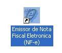
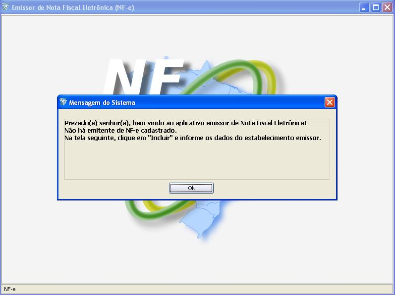
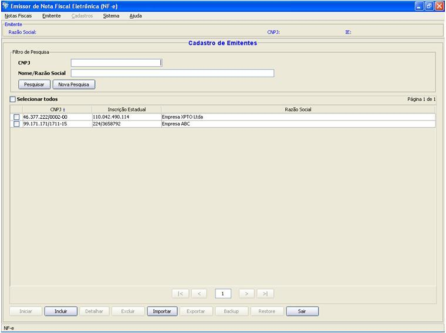

Software Emissor NF-e
Iniciando o Software
Para iniciar o programa, clique duas vezes no ícone do Software Emissor NF-e.
Observação: O aplicativo não pode ser executado mais de
uma vez (ou seja, não é permitida a execução simultânea de várias
instâncias do programa)

Primeiro Acesso
Caso
seja o primeiro acesso ao Software, ou caso ainda não existam
Emitentes cadastrados, o programa, ao ser aberto, exibirá a
mensagem de boas-vindas e solicitará o cadastramento do(s)
emitente(s) emissores de NF-e.
Exibirá então a tela de seleção e cadastramento de Emitentes.
Mais informações sobre a seleção e cadastramento de emitentes em: Emitente

Próximos Passos
Após
o cadastramento de um emitente e a seleção do mesmo, o
Software liberará as demais funcionalidades da NF-e:
geração, gerenciamento, inutilização,
entre outros.
No próximo acesso, o programa exibirá todos os
emitentes cadastrados na tela de Início do Software para a
seleção do emitente que realizará a emissão
das NF-e's.

Atualizações automáticas
Caso existam atualizações do programa disponíveis e o computador está
conectado corretamente a Internet, o Software Emissor irá realizar a
detecção destes novos pacotes e instalá-los automaticamente.
Mais informações em : Atualizações Automáticas